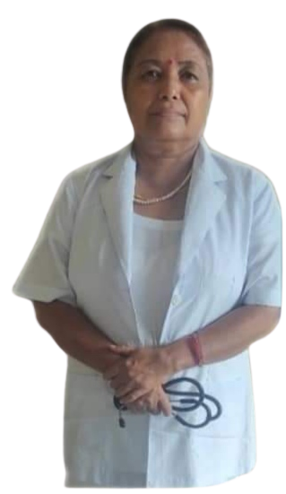
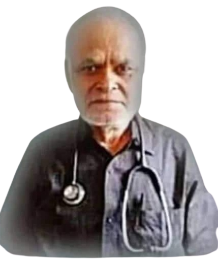

Our Doctors
1. Dr.Karna Sapkota–NMC.NO:2694
– M.B.B.S(GSVM,Kanpur)
–M.D(IOM,TU)
Dr. Karna Sapkota is a well known Pediatrician. He has done his MBBS from GSVM, Kanpur & MD from IOM, TU.

2. RN. INDU SUBBA–NNC.NO:367
– Senior.A.N.M
3. Dr. Khagendra Prasad Dahal–NMC.NO:2523
– M.B.B.S(TU)
Dr.Khagendra Prasad Dahal is a well known Senior Medical officier in eastern Nepal. He has done his M.B.B.S. from TU.He has the experience of more than 20 years..

4. Chandra Narayan Singh–NHPC.NO:B258
– H.A.G.M(IOM,TU)